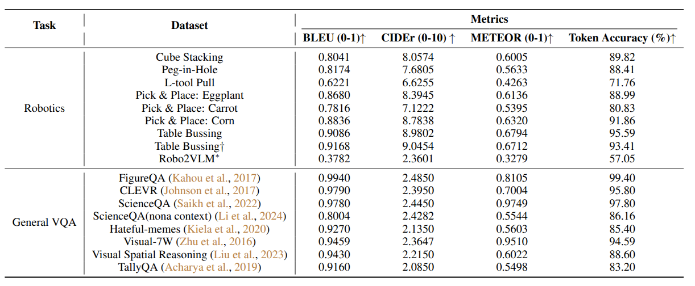
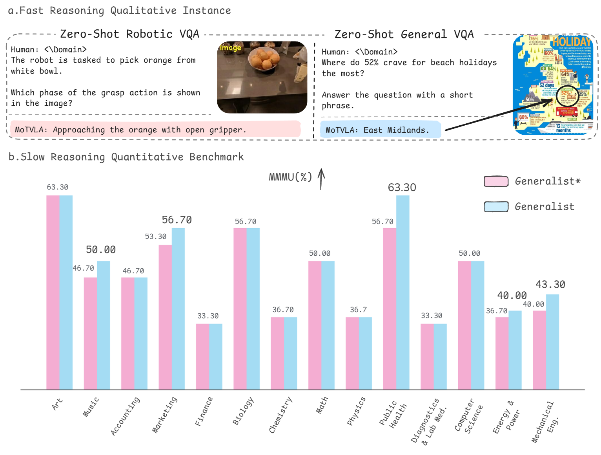
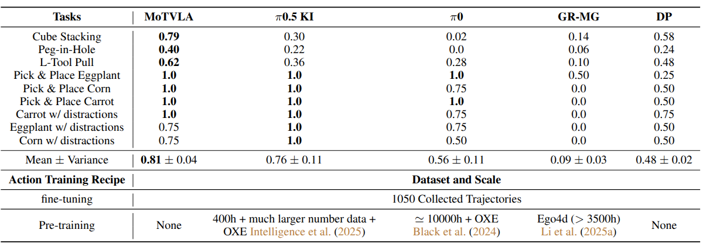

MoTVLA: A Vision-Language-Action Model with Unified Fast-Slow Reasoning
Abstract
Integrating visual-language instructions into visuomotor policies is gaining momentum in robot learning for enhancing open-world generalization. Despite promising advances, existing approaches face two challenges: limited language steerability when no generated reasoning is used as a condition, or significant inference latency when reasoning is incorporated. In this work, we introduce MoTVLA, a mixture-of-transformers (MoT)-based vision-language-action (VLA) model that integrates fast-slow unified reasoning with behavior policy learning. MoTVLA preserves the general intelligence of pre-trained VLMs (the generalist) for perception, scene understanding, and semantic planning, while a domain expert—another transformer sharing knowledge with the VLM—generates fast domain-specific reasoning (e.g., motion decomposition) to improve policy efficiency. Conditioning the action expert on decomposed motion instructions improves language steerability and behavior diversity. Evaluations across NLP benchmarks, simulation, and real-world experiments confirm MoTVLA’s advantages in reasoning and manipulation.
Framework
The universal framework of MoTVLA. MoTVLA adopts a Mixture-of-Transformers architecture comprising a generalist,
a domain expert, and an action expert. Its reasoning back-bone follows a decomposition–composition–decomposition
pipeline: multimodal inputs are first processed independently, then integrated through a unified global self-attention
mechanism, and finally decoupled at the output to perform slow and fast reasoning via the generalist and domain expert,
respectively. The fast reasoning module decomposes robotic motions, and the resulting motion signals, together with
visual and physical states, condition the action expert. This design ensures that the learned policy aligns with
motion instructions and enhances language steerability, even under ambiguous prompts.
Language Results

Fast reasoning evaluation on both robotics and general VQA tasks. (* refers to revision, † denotes the same task evaluated under an alternative instruction prompt.)

Fast reasoning instances in zero-shot qualitative evaluation. The domain expert of MoTVLA demonstrates strong zero-shot generalization across both robotic and general VQA tasks.
Robot Manipulation Tasks Results

Performance comparison across different models for simulation and real-world manipulation tasks.